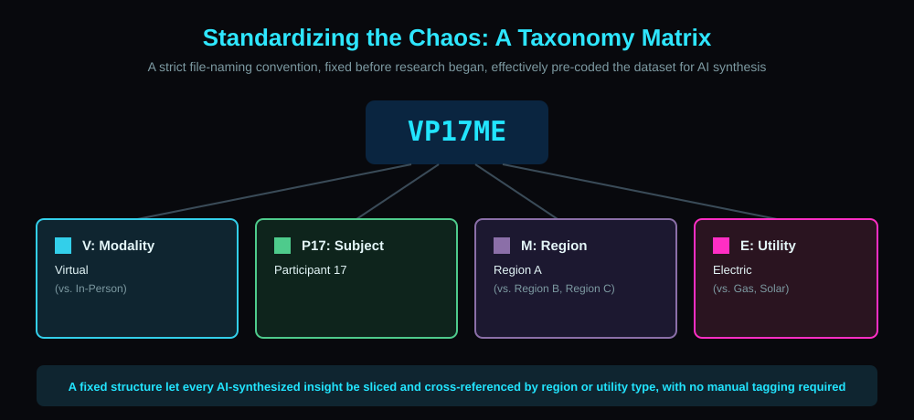
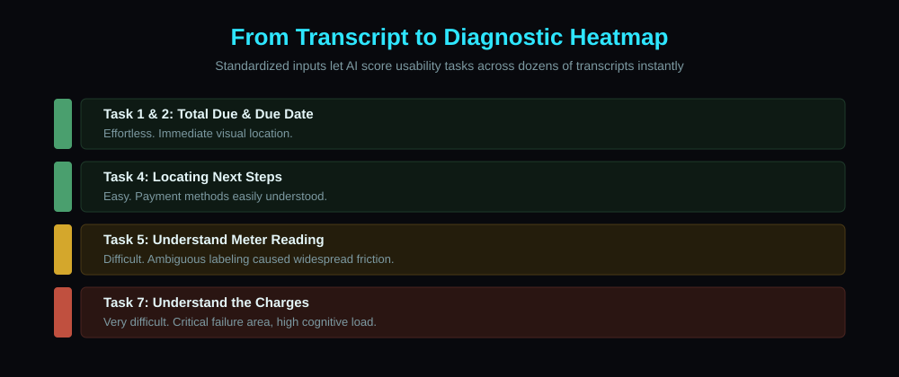

Case study · Research Consulting · UX Research Lead
Scaling the Unscalable: AI-Augmented Qualitative Research
Validating a redesigned bill format for a Florida utility company by pairing rigorous research design with AI-assisted synthesis, at a scale manual coding couldn't match.
← All case studiesContext
A utility company was redesigning its customer bill format and needed to validate it before rollout to a large residential customer base. The research had to hold three variables at once: scale (50+ individual interviews), complexity (multiple utility types across multiple regions), and environment (a mix of in-person and remote sessions). Traditional manual transcription and coding across that many variables would have taken months, time the project didn't have, on a question that couldn't tolerate a shortcut. Qualitative nuance was non-negotiable; manual synthesis at that scale simply wasn't feasible on the timeline.
Process
The method is the story here: a four-stage pipeline designed so AI could handle the volume without sacrificing qualitative nuance.

1. Prep: structure the chaos
Before a single interview happened, a rigid participant taxonomy and an identical screening script were locked in, including a brief psychological primer to reduce social-desirability bias and a strictly enforced "think out loud" protocol to keep a usable transcript flowing.
2. Capture: one pipeline, two environments
In-person sessions (paper document, webcam on hands and page) and remote sessions (screen-shared PDF) both fed the same AI transcription pipeline, so downstream synthesis never had to reconcile two data formats.
3. Anchor: translate physical action into searchable text
When a participant pointed at something on the page, the researcher immediately repeated the action back as a specific verbal query. That repetition is what let the transcript capture a taggable, specific moment instead of an ambiguous "this."
4. Synthesize: transcript to diagnostic table
A strict file-naming taxonomy (modality, participant, region, category) pre-coded the dataset before analysis began, so findings could be sliced by any variable without a manual tagging pass.

What was being tested
The redesigned bill itself, across three utility types (electric, gas, and solar) and multiple regions. Sample shown below with placeholder account data.
Key Decisions
Over-engineer the human side, not the AI
Scripts, taxonomy, and verbal anchoring were deliberately over-built so the AI synthesis step could be trusted. The discipline lived in the research design, not the AI tooling itself.
Standardize before scaling
Locking in structure before research began, rather than cleaning up after the fact, is what made cross-referencing 50+ transcripts by any variable possible without a manual coding pass.
Outcome
- Synthesized 50+ hours of qualitative interviews into diagnostic matrices in a fraction of the time traditional manual coding would have taken
- Every friction point traced back to a specific, searchable transcript moment, reducing the researcher-bias risk that comes with manual qualitative coding
- Findings were translated into a risk-mapping exercise connecting usability issues to predicted downstream support cost, framing the work as a business case rather than just a UX readout

This project demonstrates a specific skill: designing research methodology around the constraints of AI-assisted synthesis, rather than bolting AI onto a traditional process after the fact. The rigor is in the inputs, not just the tool.